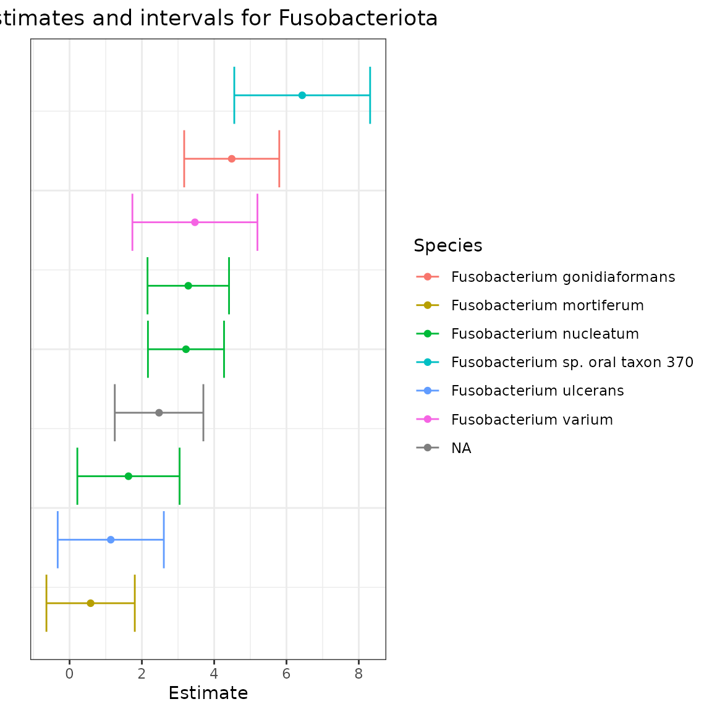

intro_to_fastEmu.RmdFirst, we will install radEmu and fastEmu
if we haven’t already.
# if (!require("remotes", quietly = TRUE))
# install.packages("remotes")
#
# remotes::install_github("statdivlab/radEmu")
# remotes::install_github("statdivlab/fastEmu")Next, we can load radEmu and fastEmu, as
well as the tidyverse package suite.
This vignette provides an introduction to using fastEmu,
a companion method to radEmu. We will demonstrate this
method using a dataset
published by Wirbel et al. (2019). This is a meta-analysis of
case-control studies about colorectal cancer.
Wirbel et al. published two pieces of data we’ll focus on today:
We’ll start by looking at the metadata.
data("wirbel_sample")
dim(wirbel_sample)
#> [1] 566 14
head(wirbel_sample)
#> Sample_ID External_ID Age Gender BMI Country Study
#> CCIS00146684ST.4.0 CCIS00146684ST-4-0 FR-726 72 F 25 FRA FR-CRC
#> CCIS00281083ST.3.0 CCIS00281083ST-3-0 FR-060 53 M 32 FRA FR-CRC
#> CCIS02124300ST.4.0 CCIS02124300ST-4-0 FR-568 35 M 23 FRA FR-CRC
#> CCIS02379307ST.4.0 CCIS02379307ST-4-0 FR-828 67 M 28 FRA FR-CRC
#> CCIS02856720ST.4.0 CCIS02856720ST-4-0 FR-027 74 M 27 FRA FR-CRC
#> CCIS03473770ST.4.0 CCIS03473770ST-4-0 FR-192 29 M 24 FRA FR-CRC
#> Group Library_Size Age_spline.1 Age_spline.2 BMI_spline.1
#> CCIS00146684ST.4.0 CTR 35443944 -0.19755428 0.7389621 1.18982420
#> CCIS00281083ST.3.0 CTR 19307896 -0.08126128 -0.6818534 -1.40679307
#> CCIS02124300ST.4.0 CTR 42141246 -2.17453529 -0.6818534 0.45476676
#> CCIS02379307ST.4.0 CRC 4829533 0.67464323 -0.1490476 0.07698823
#> CCIS02856720ST.4.0 CTR 34294675 -0.54643328 1.0941660 0.44793355
#> CCIS03473770ST.4.0 CTR 20262319 -2.87229329 -0.6818534 0.95261443
#> BMI_spline.2 Sampling
#> CCIS00146684ST.4.0 -0.5606919 BEFORE
#> CCIS00281083ST.3.0 2.0039136 BEFORE
#> CCIS02124300ST.4.0 -0.6706035 BEFORE
#> CCIS02379307ST.4.0 0.5384247 BEFORE
#> CCIS02856720ST.4.0 0.1720525 BEFORE
#> CCIS03473770ST.4.0 -0.6706035 BEFORELet’s look at the individual cohorts included in this analysis.
wirbel_sample %>%
group_by(Study) %>%
summarize(count = n())
#> # A tibble: 5 × 2
#> Study count
#> <chr> <int>
#> 1 AT-CRC 109
#> 2 CN-CRC 126
#> 3 DE-CRC 120
#> 4 FR-CRC 110
#> 5 US-CRC 101In this vignette, we will focus on samples from the Australia cohort.
wirbel_sample$Group <- factor(wirbel_sample$Group, levels = c("CTR","CRC")) # make group a factor
wirbel_sample %>%
filter(Study == "AT-CRC") %>%
group_by(Group) %>%
summarize(count = n())
#> # A tibble: 2 × 2
#> Group count
#> <fct> <int>
#> 1 CTR 63
#> 2 CRC 46
wirbel_sample_at <- wirbel_sample %>% filter(Study == "AT-CRC")In the US cohort, we have cases and controls.
Now let’s load the mOTU table.
data("wirbel_otu")
dim(wirbel_otu)
#> [1] 566 845
# let's check out a subset
wirbel_otu[1:5, 1:3]
#> Streptococcus anginosus [ref_mOTU_v2_0004]
#> CCIS00146684ST.4.0 0
#> CCIS00281083ST.3.0 0
#> CCIS02124300ST.4.0 2
#> CCIS02379307ST.4.0 0
#> CCIS02856720ST.4.0 1
#> Enterobacteriaceae sp. [ref_mOTU_v2_0036]
#> CCIS00146684ST.4.0 3
#> CCIS00281083ST.3.0 0
#> CCIS02124300ST.4.0 5
#> CCIS02379307ST.4.0 5
#> CCIS02856720ST.4.0 675
#> Citrobacter sp. [ref_mOTU_v2_0076]
#> CCIS00146684ST.4.0 0
#> CCIS00281083ST.3.0 0
#> CCIS02124300ST.4.0 0
#> CCIS02379307ST.4.0 0
#> CCIS02856720ST.4.0 0We can see that this table has samples (just like the metadata) and mOTUs. Let’s subset these samples to those from the Australian cohort.
wirbel_otu_at <- wirbel_otu[rownames(wirbel_otu) %in% wirbel_sample_at$Sample_ID, ]
dim(wirbel_otu_at)
#> [1] 109 845
dim(wirbel_sample_at)
#> [1] 109 14Now, we are left with samples.
The radEmu and fastEmu methods can only
consider taxa that appear in at least one sample in the dataset.
Therefore, we must remove any taxa that don’t appear in the Australian
cohort.
sum(colSums(wirbel_otu_at) == 0) # 20 taxa do not appear
#> [1] 20
tax_to_rm <- which(colSums(wirbel_otu_at) == 0)
wirbel_otu_at_filt <- wirbel_otu_at[, -tax_to_rm]
dim(wirbel_otu_at_filt)
#> [1] 109 825Now we are left with samples and taxa that appear in these samples.
Finally, we can load taxonomic information. We’ll use this information later.
data(wirbel_taxonomy)
head(wirbel_taxonomy)
#> domain phylum
#> Streptococcus anginosus [ref_mOTU_v2_0004] "Bacteria" "Bacillota"
#> Enterobacteriaceae sp. [ref_mOTU_v2_0036] "Bacteria" "Pseudomonadota"
#> Citrobacter sp. [ref_mOTU_v2_0076] "Bacteria" "Pseudomonadota"
#> Klebsiella michiganensis/oxytoca [ref_mOTU_v2_0079] "Bacteria" "Pseudomonadota"
#> Enterococcus faecalis [ref_mOTU_v2_0116] "Bacteria" "Bacillota"
#> Lactobacillus salivarius [ref_mOTU_v2_0125] "Bacteria" "Bacillota"
#> class
#> Streptococcus anginosus [ref_mOTU_v2_0004] "Bacilli"
#> Enterobacteriaceae sp. [ref_mOTU_v2_0036] "Gammaproteobacteria"
#> Citrobacter sp. [ref_mOTU_v2_0076] "Gammaproteobacteria"
#> Klebsiella michiganensis/oxytoca [ref_mOTU_v2_0079] "Gammaproteobacteria"
#> Enterococcus faecalis [ref_mOTU_v2_0116] "Bacilli"
#> Lactobacillus salivarius [ref_mOTU_v2_0125] "Bacilli"
#> order
#> Streptococcus anginosus [ref_mOTU_v2_0004] "Lactobacillales"
#> Enterobacteriaceae sp. [ref_mOTU_v2_0036] "Enterobacterales"
#> Citrobacter sp. [ref_mOTU_v2_0076] "Enterobacterales"
#> Klebsiella michiganensis/oxytoca [ref_mOTU_v2_0079] "Enterobacterales"
#> Enterococcus faecalis [ref_mOTU_v2_0116] "Lactobacillales"
#> Lactobacillus salivarius [ref_mOTU_v2_0125] "Lactobacillales"
#> family
#> Streptococcus anginosus [ref_mOTU_v2_0004] "Streptococcaceae"
#> Enterobacteriaceae sp. [ref_mOTU_v2_0036] "Enterobacteriaceae"
#> Citrobacter sp. [ref_mOTU_v2_0076] "Enterobacteriaceae"
#> Klebsiella michiganensis/oxytoca [ref_mOTU_v2_0079] "Enterobacteriaceae"
#> Enterococcus faecalis [ref_mOTU_v2_0116] "Enterococcaceae"
#> Lactobacillus salivarius [ref_mOTU_v2_0125] "Lactobacillaceae"
#> genus
#> Streptococcus anginosus [ref_mOTU_v2_0004] "Streptococcus"
#> Enterobacteriaceae sp. [ref_mOTU_v2_0036] "Enterobacteriaceae"
#> Citrobacter sp. [ref_mOTU_v2_0076] "Citrobacter"
#> Klebsiella michiganensis/oxytoca [ref_mOTU_v2_0079] "Klebsiella"
#> Enterococcus faecalis [ref_mOTU_v2_0116] "Enterococcus"
#> Lactobacillus salivarius [ref_mOTU_v2_0125] "Lactobacillus"
#> species
#> Streptococcus anginosus [ref_mOTU_v2_0004] "Streptococcus anginosus"
#> Enterobacteriaceae sp. [ref_mOTU_v2_0036] "Enterobacteriaceae bacterium"
#> Citrobacter sp. [ref_mOTU_v2_0076] "Citrobacter sp."
#> Klebsiella michiganensis/oxytoca [ref_mOTU_v2_0079] "Klebsiella michiganensis"
#> Enterococcus faecalis [ref_mOTU_v2_0116] "Enterococcus faecalis"
#> Lactobacillus salivarius [ref_mOTU_v2_0125] "Ligilactobacillus salivarius"We will now fit a model using emuFit() from
radEmu. We are interested in studying the log
fold-differences in mOTU abundances across the Group
covariate, while accounting for Gender. In the code below,
we estimated these log fold-difference parameters. This will take up to
a minute to run, depending on your machine.
emuMod <- emuFit(Y = wirbel_otu_at_filt, formula = ~ Group + Gender,
data = wirbel_sample_at, run_score_tests = FALSE,
tolerance = 1e-4)Let’s take a look at our results.
head(emuMod$coef)
#> covariate category category_num
#> 1 GroupCRC Streptococcus anginosus [ref_mOTU_v2_0004] 1
#> 2 GroupCRC Enterobacteriaceae sp. [ref_mOTU_v2_0036] 2
#> 3 GroupCRC Citrobacter sp. [ref_mOTU_v2_0076] 3
#> 4 GroupCRC Klebsiella michiganensis/oxytoca [ref_mOTU_v2_0079] 4
#> 5 GroupCRC Enterococcus faecalis [ref_mOTU_v2_0116] 5
#> 6 GroupCRC Lactobacillus salivarius [ref_mOTU_v2_0125] 6
#> estimate se lower upper score_stat pval
#> 1 -0.3953228 0.4488537 -1.27505983 0.4844143 NA NA
#> 2 1.1194867 0.6092440 -0.07460952 2.3135830 NA NA
#> 3 2.2890633 1.0746696 0.18274961 4.3953769 NA NA
#> 4 2.7344825 1.0933320 0.59159103 4.8773739 NA NA
#> 5 0.8669525 1.0484701 -1.18801117 2.9219161 NA NA
#> 6 -1.2006590 0.8778756 -2.92126350 0.5199455 NA NAFor each covariate and mOTU combination we have an estimate, robust standard error, and confidence interval. The estimate in the first row of the results is . We can interpret this as saying that the expected log fold-difference in abundance of Streptococcus anginosus [ref_mOTU_v2_0004] in colorectal cancer cases compared to controls (for participants of the same gender) is (this corresponds to a fold-difference of ), relative to the typical log fold-difference across all mOTUs between cases and controls. By typical, we mean that we are comparing each estimated log fold-difference to the approximate median of estimated log fold-differences of all mOTUs in the analysis. When we say approximate median, we refer to a function that is similar to the median but has nicer mathematical properties.
Now, let’s look at estimates for the Group covariate
across all of our mOTUs.
emuMod_group_tax <- emuMod$coef %>% # add in taxonomy information
filter(covariate == "GroupCRC") %>%
left_join(data.frame(wirbel_taxonomy) %>%
mutate(category = rownames(wirbel_taxonomy)),
by = "category")
emuMod_group_tax %>%
arrange(estimate) %>%
mutate(ord = 1:n()) %>%
ggplot(aes(x = estimate, xmin = lower, xmax = upper, color = phylum, y = ord)) +
geom_point() + geom_errorbar() +
labs(y = "", x = "Estimate", color = "Phylum") +
theme_bw() +
ggtitle("Estimates and intervals for all mOTUs") +
theme(axis.text.y = element_blank(),
axis.ticks.y = element_blank(),
plot.title = element_text(hjust = 0.5))Here, we can see a range of confidence intervals for estimated log fold-differences. While the approximate median of the estimates is (this is enforced due to the parameter that we are estimating), the estimates range from to . Here we can see that the majority of the mOTUs in our analysis belong to the Bacillota phylum.
Let’s now investigate mOTUs from the Fusobacteriota phylum. In Wirbel et al.’s analysis, they found some evidence of enrichment for some members of this phylum. Let’s look at the log fold-difference estimates for these mOTUs.
emuMod_group_tax %>%
arrange(estimate) %>%
filter(phylum == "Fusobacteriota") %>%
mutate(ord = 1:n()) %>%
ggplot(aes(x = estimate, xmin = lower, xmax = upper, y = ord, color = species)) +
geom_point() + geom_errorbar() +
labs(y = "", x = "Estimate", color = "Species") +
theme_bw() +
ggtitle("Estimates and intervals for Fusobacteriota") +
theme(axis.text.y = element_blank(),
axis.ticks.y = element_blank(),
plot.title = element_text(hjust = 0.5))
radEmu
Now that we’ve explored our estimates, let’s move on to running hypothesis tests. Specifically, let’s test the null hypotheses that the expected log fold-difference in abundance in colorectal cases compared controls (accounting for gender) for each Fusobacteriota mOTU is equal to the typical log fold-difference between cases and controls across all mOTUs.
First, we’ll pull out the indices of these mOTUs that we would like to test.
fuso <- emuMod_group_tax %>%
filter(phylum == "Fusobacteriota") %>%
pull(category)
fuso_ind <- which(colnames(wirbel_otu_at_filt) %in% fuso)radEmu uses robust score tests for hypothesis testing.
These tests are robust to model misspecification and are shown to
control the Type I error rate in a variety of simulation settings,
including those with small sample sizes and datasets with a large
proportion of zeros. However, one downside of these tests is that each
test requires a substantial amount of computational time, and this gets
larger for datasets with more taxa.
Below, we have code to test the nine Fusobacteriota mOTUs. On a Mac with 16 GB of memory and the M4 chip, this takes approximately minutes to run. You can either run this below, or load in the results.
radFusTest <- emuFit(Y = wirbel_otu_at_filt, formula = ~ Group + Gender,
data = wirbel_sample_at, fitted_model = emuMod,
refit = FALSE, compute_cis = FALSE,
test_kj = data.frame(k = 2, j = fuso_ind),
verbose = T)
radFusTest <- readRDS(system.file("extdata", "radFusTest.rds", package = "fastEmu"))
radTimes <- c(23, 27, 198, 18, 8, 26, 15, 15, 56) # the times each score test took on my laptopWhile minutes isn’t very long to wait, you can imagine that testing all mOTUs would take a long time, and if we had a larger set of mOTUs (several thousand for example), each test would take longer.
fastEmu
fastEmu is a companion method to radEmu
that runs robust score tests faster for approximately the same
parameters that we estimate and test with radEmu. This is
especially useful for large datasets, if using radEmu is
computationally infeasible given your computational resources.
We will start by comparing the parameters estimated by
fastEmu to radEmu. fastEmu works
by fitting a simpler model than the one used by radEmu,
while targeting a very similar parameter. In order to define this
simpler model, we need a parameter that relies on a subset of taxa, as
opposed to one defined relative to the “typical log fold-difference
across all taxa.” In fastEmu, we instead compare to the
“typical log fold-difference across taxa in a reference set.” Ideally,
the approximate median log fold-difference in this reference set would
be quite similar to the approximate median log fold-difference in the
full analysis.
In fastEmu, the user can either decide which taxa to
include in this reference set, or a “data-driven” reference set can be
determined. This “data-driven” reference set is a small set of taxa that
have estimated log fold-differences that are closest to the approximate
median of estimated log fold-differences from radEmu.
Below, we can use fastEmuFit() to determine a “data-driven”
reference set.
fastMod <- fastEmuFit(Y = wirbel_otu_at_filt, formula = ~ Group + Gender,
data = wirbel_sample_at, fitted_model = emuMod,
reference_set = "data_driven", run_score_tests = FALSE)
fastMod$reference_set_names
#> [[1]]
#> [1] "unknown Roseburia [meta_mOTU_v2_7567]"
#> [2] "unknown Clostridiales [meta_mOTU_v2_6575]"
#> [3] "unknown Clostridiales [meta_mOTU_v2_7031]"
#> [4] "unknown Lactobacillales [meta_mOTU_v2_6288]"
#> [5] "unknown Clostridiales [meta_mOTU_v2_5954]"
#> [6] "unknown Clostridiales [meta_mOTU_v2_6134]"
#> [7] "unknown Clostridiales [meta_mOTU_v2_6751]"
#> [8] "Eubacterium sp. CAG:156 [meta_mOTU_v2_7325]"
#> [9] "unknown Ruminococcaceae [meta_mOTU_v2_7271]"
#> [10] "unknown Clostridium [meta_mOTU_v2_6816]"
#> [11] "Niameybacter massiliensis [meta_mOTU_v2_7610]"
#> [12] "unknown Azospirillum [meta_mOTU_v2_6527]"
#> [13] "unknown Clostridiales [meta_mOTU_v2_7707]"
#> [14] "unknown Desulfovibrio [meta_mOTU_v2_5993]"
#> [15] "unknown Clostridiales [meta_mOTU_v2_7087]"
#> [16] "unknown Clostridiales [meta_mOTU_v2_7781]"
#> [17] "Desulfovibrio piger [ref_mOTU_v2_4205]"
#> [18] "unknown Clostridiales [meta_mOTU_v2_6856]"
#> [19] "Bifidobacterium ruminantium [ref_mOTU_v2_1159]"
#> [20] "Intestinimonas butyriciproducens [ref_mOTU_v2_2968]"
#> [21] "unknown Clostridiales [meta_mOTU_v2_7415]"
#> [22] "Clostridium sp. CAG:1193 [meta_mOTU_v2_7613]"
#> [23] "unknown Clostridiales [meta_mOTU_v2_7800]"
#> [24] "unknown Firmicutes [meta_mOTU_v2_6277]"
#> [25] "unknown Bacteroidales [meta_mOTU_v2_5329]"
#> [26] "unknown Clostridiales [meta_mOTU_v2_6416]"
#> [27] "unknown Acetobacter [meta_mOTU_v2_6063]"
#> [28] "unknown Bacteroidales [meta_mOTU_v2_6591]"
#> [29] "unknown Clostridiales [meta_mOTU_v2_5991]"
#> [30] "unknown Atopobiaceae [meta_mOTU_v2_6458]"
#>
#> [[2]]
#> [1] "unknown Firmicutes [meta_mOTU_v2_7689]"
#> [2] "unknown Clostridiales [meta_mOTU_v2_5791]"
#> [3] "Holdemania filiformis [ref_mOTU_v2_4459]"
#> [4] "unknown Clostridiales [meta_mOTU_v2_5347]"
#> [5] "unknown Clostridiales [meta_mOTU_v2_6885]"
#> [6] "unknown Clostridiales [meta_mOTU_v2_5653]"
#> [7] "Eubacterium sp. CAG:274 [meta_mOTU_v2_7140]"
#> [8] "unknown Clostridiales [meta_mOTU_v2_7093]"
#> [9] "Enterococcus faecium [ref_mOTU_v2_0372]"
#> [10] "unknown Bacteroidales [meta_mOTU_v2_5951]"
#> [11] "Clostridium spiroforme [ref_mOTU_v2_4235]"
#> [12] "Desulfovibrio piger [ref_mOTU_v2_4205]"
#> [13] "Clostridium sp. 27_14 [meta_mOTU_v2_5718]"
#> [14] "Anaeromassilibacillus sp. An200 [meta_mOTU_v2_6051]"
#> [15] "Alistipes shahii [ref_mOTU_v2_4873]"
#> [16] "unknown Faecalibacterium [meta_mOTU_v2_5815]"
#> [17] "unknown Clostridiales [meta_mOTU_v2_7014]"
#> [18] "Clostridium sp. CAG:343 [meta_mOTU_v2_6218]"
#> [19] "unknown Clostridiales [meta_mOTU_v2_7180]"
#> [20] "unknown Clostridiales [meta_mOTU_v2_6808]"
#> [21] "Clostridium sp. CAG:288 [meta_mOTU_v2_6160]"
#> [22] "unknown Clostridiales [meta_mOTU_v2_6801]"
#> [23] "Megamonas funiformis/rupellensis [ref_mOTU_v2_0502]"
#> [24] "unknown Clostridiales [meta_mOTU_v2_6105]"
#> [25] "unknown Clostridiales [meta_mOTU_v2_5339]"
#> [26] "unknown Peptostreptococcaceae [meta_mOTU_v2_7331]"
#> [27] "Clostridium sp. JCC [ref_mOTU_v2_3353]"
#> [28] "unknown Clostridiales [meta_mOTU_v2_5805]"
#> [29] "unknown Roseburia [meta_mOTU_v2_5354]"
#> [30] "Ruminococcus lactaris [ref_mOTU_v2_0281]"
#>
#> [[3]]
#> [1] "Porphyromonas uenonis [ref_mOTU_v2_4616]"
#> [2] "Ruminococcus bicirculans [ref_mOTU_v2_2358]"
#> [3] "Ruminococcus gnavus [ref_mOTU_v2_0280]"
#> [4] "Eubacterium eligens [ref_mOTU_v2_4389]"
#> [5] "Atopobium parvulum [ref_mOTU_v2_0741]"
#> [6] "unknown Clostridiales [meta_mOTU_v2_7769]"
#> [7] "unknown Anaerotruncus [meta_mOTU_v2_6835]"
#> [8] "Streptococcus anginosus [ref_mOTU_v2_0004]"
#> [9] "unknown Firmicutes [meta_mOTU_v2_6711]"
#> [10] "unknown Clostridiales [meta_mOTU_v2_7337]"
#> [11] "Alistipes senegalensis [ref_mOTU_v2_1594]"
#> [12] "unknown Sutterella [meta_mOTU_v2_5929]"
#> [13] "unknown Clostridiales [meta_mOTU_v2_5514]"
#> [14] "unknown Clostridiales [meta_mOTU_v2_7186]"
#> [15] "Coprobacillus sp. CAG:605 [meta_mOTU_v2_7625]"
#> [16] "Bilophila wadsworthia [ref_mOTU_v2_1149]"
#> [17] "unknown Clostridiales [meta_mOTU_v2_7782]"
#> [18] "Eubacterium ramulus [ref_mOTU_v2_2795]"
#> [19] "unknown Clostridiales [meta_mOTU_v2_7455]"
#> [20] "unknown Ruminococcaceae [meta_mOTU_v2_6557]"
#> [21] "unknown Eubacterium [meta_mOTU_v2_6509]"
#> [22] "unknown Clostridiales [meta_mOTU_v2_6852]"
#> [23] "unknown Lactobacillales [meta_mOTU_v2_6288]"
#> [24] "Fusobacterium nucleatum s. animalis [ref_mOTU_v2_0776]"
#> [25] "uncultured Eubacterium sp. [meta_mOTU_v2_5477]"
#> [26] "Granulicatella adiacens [ref_mOTU_v2_4659]"
#> [27] "Turicibacter sanguinis [ref_mOTU_v2_1493]"
#> [28] "Clostridium sp. CAG:127 [meta_mOTU_v2_5364]"
#> [29] "unknown Clostridiales [meta_mOTU_v2_7527]"
#> [30] "unknown Clostridiales [meta_mOTU_v2_7553]"
fastMod$constraint_diff
#> [1] -0.006124724 0.006670540 0.001169057Above, we can see the reference sets chosen for each covariate in the
model (as well as the intercept). The constraint_diff
object tells us the difference between the approximate median log
fold-difference across all taxa and the approximate median log
fold-difference across the reference set, for each covariate. Each of
these differences represents a small shift in all parameter estimates
from radEmu to fastEmu.
Now, we can run our robust score tests for the
Fusobacteriota mOTUs using fastEmu. We’ll pass in
our fit above fastMod in order to use the “data-driven”
reference set that we already computed.
fastFusTest <- fastEmuFit(Y = wirbel_otu_at_filt, formula = ~ Group + Gender,
data = wirbel_sample_at, fitted_model = fastMod,
test_kj = data.frame(k = 2, j = fuso_ind), verbose = TRUE)
#> Skipping estimation and reference set building/checking because a `fastEmuFit` fitted model has been provided. Proceeding immediately with score tests.
#> Running score test 1 of 9.
#> Score test 1 of 9 has completed in approximately 5 seconds.
#> Running score test 2 of 9.
#> Score test 2 of 9 has completed in approximately 6 seconds.
#> Running score test 3 of 9.
#> Score test 3 of 9 has completed in approximately 50 seconds.
#> Running score test 4 of 9.
#> Score test 4 of 9 has completed in approximately 30 seconds.
#> Running score test 5 of 9.
#> Score test 5 of 9 has completed in approximately 3 seconds.
#> Running score test 6 of 9.
#> Score test 6 of 9 has completed in approximately 11 seconds.
#> Running score test 7 of 9.
#> Score test 7 of 9 has completed in approximately 13 seconds.
#> Running score test 8 of 9.
#> Score test 8 of 9 has completed in approximately 4 seconds.
#> Running score test 9 of 9.
#> Score test 9 of 9 has completed in approximately 14 seconds.
fastFusTest$coef[fuso_ind,]
#> covariate category
#> 64 GroupCRC Fusobacterium nucleatum s. vincentii [ref_mOTU_v2_0754]
#> 67 GroupCRC Fusobacterium nucleatum s. animalis [ref_mOTU_v2_0776]
#> 68 GroupCRC Fusobacterium nucleatum s. nucleatum [ref_mOTU_v2_0777]
#> 119 GroupCRC Fusobacterium ulcerans [ref_mOTU_v2_1396]
#> 122 GroupCRC Fusobacterium sp. oral taxon 370 [ref_mOTU_v2_1403]
#> 123 GroupCRC Fusobacterium gonidiaformans [ref_mOTU_v2_1404]
#> 185 GroupCRC Fusobacterium mortiferum [ref_mOTU_v2_4310]
#> 186 GroupCRC Fusobacterium varium [ref_mOTU_v2_4311]
#> 727 GroupCRC unknown Fusobacterium [meta_mOTU_v2_7372]
#> category_num estimate se lower upper score_stat pval
#> 64 64 1.6223985 0.7229090 0.2055229 3.039274 2.5419415 0.110858395
#> 67 67 3.2766977 0.5738113 2.1520481 4.401347 7.7815346 0.005278294
#> 68 68 3.2134419 0.5473542 2.1406475 4.286236 3.0827028 0.079128927
#> 119 119 1.1324033 0.7549393 -0.3472506 2.612057 1.7469445 0.186261316
#> 122 122 6.4280384 0.9647693 4.5371254 8.318951 1.1571196 0.282063704
#> 123 123 4.4786902 0.6838872 3.1382960 5.819085 2.1574059 0.141884047
#> 185 185 0.5747373 0.6236383 -0.6475713 1.797046 0.8278341 0.362899558
#> 186 186 3.4603537 0.8871824 1.7215082 5.199199 1.2330106 0.266822340
#> 727 727 2.4687183 0.6246063 1.2445124 3.692924 2.1750993 0.140260466
#> reference_category
#> 64 FALSE
#> 67 FALSE
#> 68 FALSE
#> 119 FALSE
#> 122 FALSE
#> 123 FALSE
#> 185 FALSE
#> 186 FALSE
#> 727 FALSE
fastTimes <- c(3, 2, 20, 13, 1, 5, 5, 1, 6) # the times each score test took on my laptopOne note is that you don’t need to run radEmu before
fastEmu. Instead you could run the below code, which will
estimate radEmu parameters, generate the “data-drive”
reference set, shift estimates, and then run the desired robust score
tests.
fastFusTest <- fastEmuFit(Y = wirbel_otu_at_filt, formula = ~ Group + Gender,
data = wirbel_sample_at, reference_set = "data_driven",
test_kj = data.frame(k = 2, j = fuso_ind), verbose = TRUE)Now, we can compare the test results between radEmu and
fastEmu.
data.frame(rad = radFusTest$coef$pval[fuso_ind],
fast = fastFusTest$coef$pval[fuso_ind]) %>%
ggplot(aes(x = rad, y = fast)) +
geom_point() +
labs(x = "radEmu p-value", y = "fastEmu p-value") +
geom_abline(aes(slope = 1, intercept = 0), color = "red") +
xlim(c(0, 1)) + ylim(c(0, 1))In this plot, we can see that the p-values from fastEmu
and radEmu for these nine tests are nearly identical.
We can also compare the times that these took (these are the times from my laptop, you may find the times to run each method to be slightly different).
radTimes / fastTimes
#> [1] 7.666667 13.500000 9.900000 1.384615 8.000000 5.200000 3.000000
#> [8] 15.000000 9.333333
sum(radTimes) / sum(fastTimes)
#> [1] 6.892857Overall, running fastEmu was approximately
times faster than running radEmu. For individual score
tests, fastEmu was between
and
times faster.
fastFusTest$coef[fuso_ind, ]
#> covariate category
#> 64 GroupCRC Fusobacterium nucleatum s. vincentii [ref_mOTU_v2_0754]
#> 67 GroupCRC Fusobacterium nucleatum s. animalis [ref_mOTU_v2_0776]
#> 68 GroupCRC Fusobacterium nucleatum s. nucleatum [ref_mOTU_v2_0777]
#> 119 GroupCRC Fusobacterium ulcerans [ref_mOTU_v2_1396]
#> 122 GroupCRC Fusobacterium sp. oral taxon 370 [ref_mOTU_v2_1403]
#> 123 GroupCRC Fusobacterium gonidiaformans [ref_mOTU_v2_1404]
#> 185 GroupCRC Fusobacterium mortiferum [ref_mOTU_v2_4310]
#> 186 GroupCRC Fusobacterium varium [ref_mOTU_v2_4311]
#> 727 GroupCRC unknown Fusobacterium [meta_mOTU_v2_7372]
#> category_num estimate se lower upper score_stat pval
#> 64 64 1.6223985 0.7229090 0.2055229 3.039274 2.5419415 0.110858395
#> 67 67 3.2766977 0.5738113 2.1520481 4.401347 7.7815346 0.005278294
#> 68 68 3.2134419 0.5473542 2.1406475 4.286236 3.0827028 0.079128927
#> 119 119 1.1324033 0.7549393 -0.3472506 2.612057 1.7469445 0.186261316
#> 122 122 6.4280384 0.9647693 4.5371254 8.318951 1.1571196 0.282063704
#> 123 123 4.4786902 0.6838872 3.1382960 5.819085 2.1574059 0.141884047
#> 185 185 0.5747373 0.6236383 -0.6475713 1.797046 0.8278341 0.362899558
#> 186 186 3.4603537 0.8871824 1.7215082 5.199199 1.2330106 0.266822340
#> 727 727 2.4687183 0.6246063 1.2445124 3.692924 2.1750993 0.140260466
#> reference_category
#> 64 FALSE
#> 67 FALSE
#> 68 FALSE
#> 119 FALSE
#> 122 FALSE
#> 123 FALSE
#> 185 FALSE
#> 186 FALSE
#> 727 FALSEWhen we look at the results, we can see that the p-values from the robust score tests range from to . There is only one taxon with a p-value below , which is Fusobacterium nucleatum s. animalis [ref_mOTU_v2_0776].
We can account for multiple testing by adjusting our p-values to
control the false discovery rate using the Benjamini-Hochberg procedure
(although if you have a larger number of tests, we recommend using the
qvalue procedure implemented in the qvalue package).
p.adjust(fastFusTest$coef$pval[fuso_ind], method = "BH")
#> [1] 0.25539128 0.04750465 0.25539128 0.27939197 0.31732167 0.25539128 0.36289956
#> [8] 0.31732167 0.25539128Here, we can see that at a 5% false discovery rate threshold, we can reject the null hypothesis that the expected log fold-difference in the abundance of Fusobacterium nucleatum s. animalis [ref_mOTU_v2_0776] in colorectal cases compared to controls is equal to the typical log fold-difference across all taxa between cases and controls.
In this analysis, using fastEmu instead of
radEmu only saved us a few minutes. However, in a large
analysis, this may add up. Additionally, the time that
fastEmu saves will get larger and larger for analyses with
more and more taxa. The ideal setting to use fastEmu is
when J (the number of taxa) is quite large and
p (the number of covariates) is small to moderate.